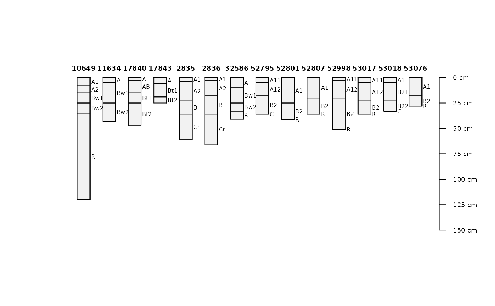

Download soil characterization and morphologic data via BBOX, MLRA, or soil series name query, from the KSSL database.
Usage
fetchKSSL(
series = NA,
bbox = NA,
mlra = NA,
pedlabsampnum = NA,
pedon_id = NA,
pedon_key = NA,
returnMorphologicData = FALSE,
returnGeochemicalData = FALSE,
simplifyColors = FALSE,
progress = TRUE
)Arguments
- series
vector of soil series names, case insensitive
- bbox
a single bounding box in WGS84 geographic coordinates e.g.
c(-120, 37, -122, 38)- mlra
vector of MLRA IDs, e.g. "18" or "22A"
- pedlabsampnum
vector of KSSL pedon lab sample number
- pedon_id
vector of user pedon ID
- pedon_key
vector of KSSL internal pedon ID
- returnMorphologicData
logical, optionally request basic morphologic data, see details section
- returnGeochemicalData
logical, optionally request geochemical, optical and XRD/thermal data, see details section
- simplifyColors
logical, simplify colors (from morphologic data) and join with horizon data
- progress
logical, optionally give progress when iterating over multiple requests
Details
This is an experimental interface to a subset for the most commonly used data from a snapshot of KSSL (lab characterization) and NASIS (morphologic) data.
Series-queries are case insensitive. Series name is based on the "correlated as" field (from KSSL snapshot) when present. The "sampled as" classification was promoted to "correlated as" if the "correlated as" classification was missing.
When returnMorphologicData is TRUE, the resulting object is a list.
The standard output from fetchKSSL (SoilProfileCollection
object) is stored in the named element "SPC". The additional elements are
basic morphologic data: soil color, rock fragment volume, pores, structure,
and redoximorphic features. There is a 1:many relationship between the
horizon data in "SPC" and the additional dataframes in morph. See
examples for ideas on how to "flatten" these tables.
When returnGeochemicalData is TRUE, the resulting object is a list.
The standard output from fetchKSSL (SoilProfileCollection
object) is stored in the named element "SPC". The additional elements are
geochemical and mineralogy analysis tables, specifically:
geochemical/elemental analyses "geochem", optical mineralogy "optical", and
X-ray diffraction / thermal "xrd_thermal". returnGeochemicalData will
include additional dataframes geochem, optical, and
xrd_thermal in list result.
Setting simplifyColors=TRUE will automatically flatten the soil color
data and join to horizon level attributes.
Function arguments (series, mlra, etc.) are fully vectorized
except for bbox.
Note
SoilWeb maintains a snapshot of these KSSL and NASIS data. The SoilWeb snapshot was developed using methods described here: https://github.com/dylanbeaudette/process-kssl-snapshot. Please use the link below for the live data.
Examples
# \donttest{
library(aqp)
# search by series name
s <- fetchKSSL(series='auburn')
#> 14 pedons loaded (0.06 Mb transferred)
# search by bounding-box
# s <- fetchKSSL(bbox=c(-120, 37, -122, 38))
# how many pedons
length(s)
#> [1] 14
# plot
plotSPC(s, name='hzn_desgn', max.depth=150)

##
## morphologic data
##
# get lab and morphologic data
s <- fetchKSSL(series='auburn', returnMorphologicData = TRUE)
#> 14 pedons loaded (0.09 Mb transferred)
# extract SPC
pedons <- s$SPC
# if (requireNamespace("farver")) {
# ## automatically simplify color data (requires farver)
# s <- fetchKSSL(series='auburn', returnMorphologicData = TRUE, simplifyColors=TRUE)
# # check
# par(mar=c(0,0,0,0))
# plot(pedons, color='moist_soil_color', print.id=FALSE)
# }
# }